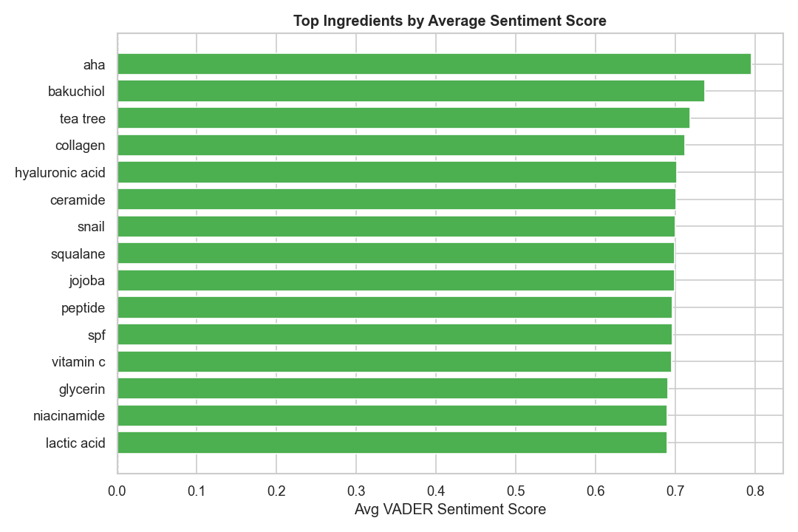
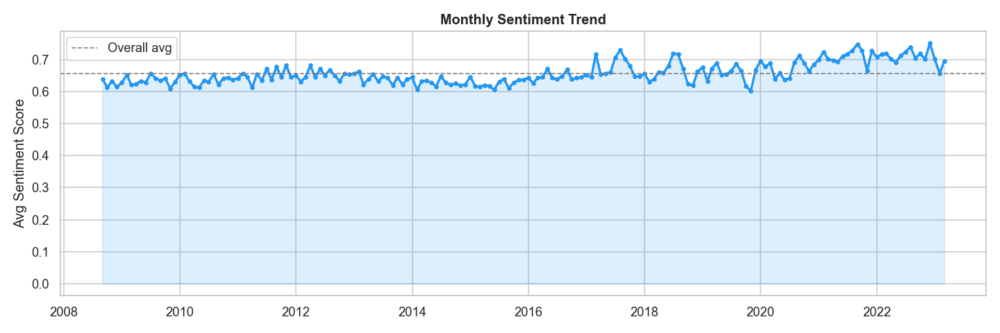
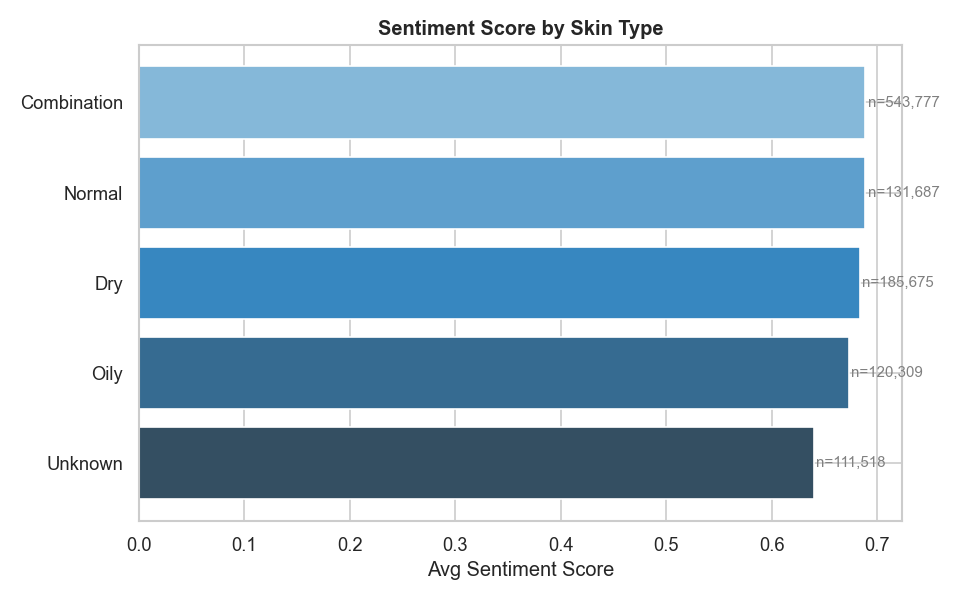
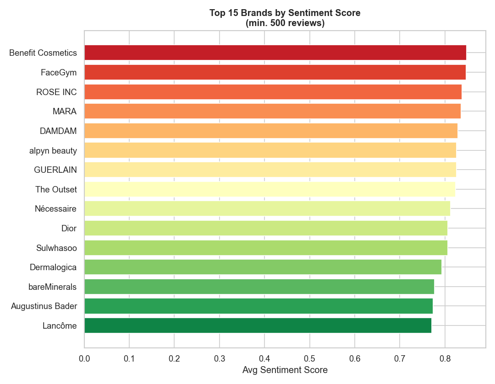
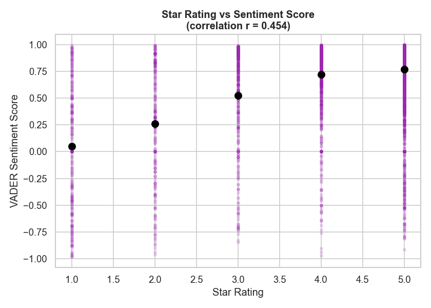

Overall Sentiment Distribution
VADER NLP
Key finding: Over 9 in 10 reviews carry positive sentiment — but the 7.7% negative cohort is concentrated in specific product categories and ingredients, making targeted analysis valuable.
Ingredients by Sentiment Score
28 ingredients
AHA ranks highest among tracked ingredients. Lactic acid and salicylic acid appear in more mixed reviews — likely due to initial skin adjustment periods.
Monthly Sentiment Trend (2008 – 2023)
15-year history
Key finding: Sentiment has remained consistently high over 15 years of reviews, validating the dataset's reliability. Dips in sentiment correlate with product reformulation periods and major trend shifts (e.g. retinol backlash in 2021).
Sentiment by Skin Type
Demographic split
Combination and dry skin types leave the most positive reviews, while oily skin reviewers tend to be slightly more critical.
Top 15 Brands by Sentiment
min 500 reviews
Benefit Cosmetics leads overall sentiment among high-volume brands. Premium skincare brands consistently outperform mass-market alternatives in NLP scores.
Star Rating vs NLP Sentiment Score
r = 0.45 correlation
Moderate correlation (r = 0.45) between star ratings and NLP-derived sentiment — confirming that sentiment analysis captures nuance that star ratings alone miss. A 4-star review can carry more negative language than a 3-star review, making NLP a richer signal.